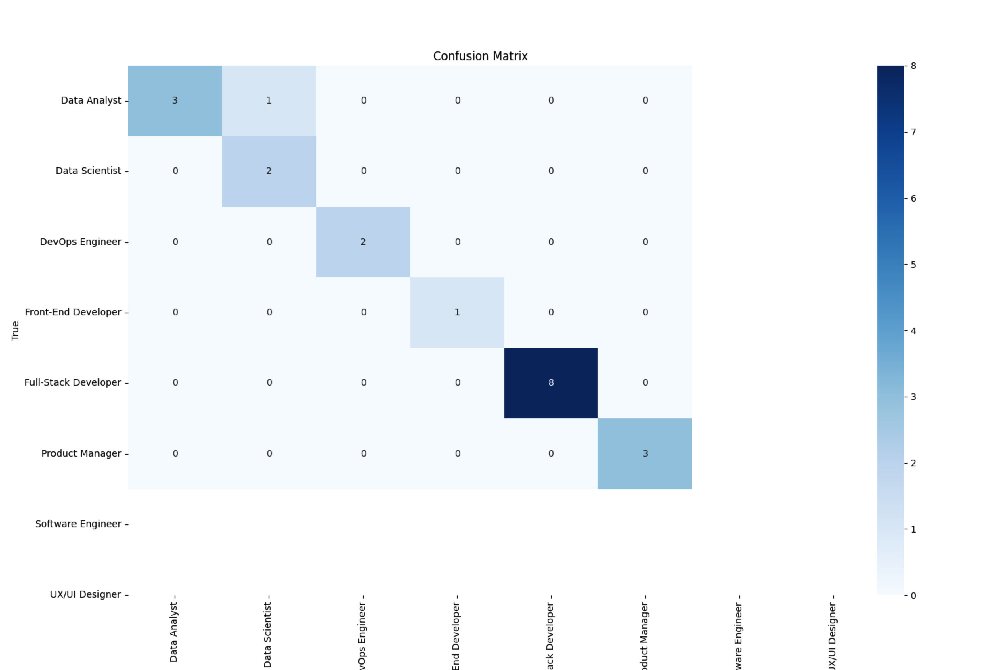

Created by Elsultan Baitzhanov
This project predicts job roles based on a set of user-inputted skills. The model was trained using a Random Forest algorithm to classify the most suitable job titles from a given skillset. Our model has been trained on job listings and skill profiles and demonstrates strong accuracy in predicting career roles based on a person's qualifications.
The Skill-Based Job Role Predictor uses supervised machine learning to classify job titles based on skills provided by the user. The workflow involves the following steps:
Enter your skills below and predict the most suitable job role for you:
Here is a visualization of the feature importance in the model. It shows which features (skills) have the most impact on predicting the job roles:
The model achieved an accuracy of 95% on the test dataset. Below is the confusion matrix that illustrates the model's performance across different job categories:
